Mans datorikas portfolio
Maksims Jermaks 10.e
Sākums (par projektu)
Šīs vietnes būtība ir dokumentēt visu mūsu semestri, lai skatītu mūsu uzdevumus visa gada garumā, varat pārvietoties pa navigācijas joslu iepriekš.
Rastrgrafika (GIMP)
Mūsu semestris sākās ar rastrgrafikas programmu - GIMP (GNU Image Manipulation Program), kas palīdzēja mums iemācīties rediģēt fotogrāfijas, lietot filtrus, izveidot gifus un daudz ko citu, darbu piemēri ir redzami zemāk.
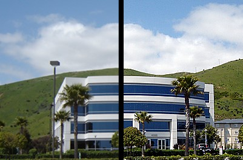 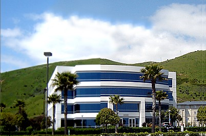 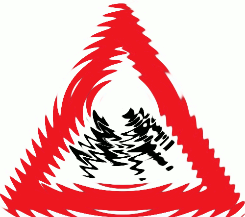 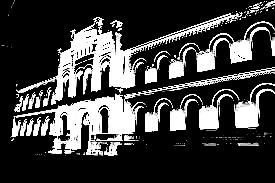Vektorgrafika (Inkscape)
Nākamā tēma bija vektorgrafika, proti, programma Inkscape. Kā zināms, vektorgrafiku izmanto ilustrācijām, ikonām, logotipiem un tehniskajiem zīmējumiem. Tāpēc mēs arī izveidojām savu logotipu mūsu uzņēmumam. Piemērs ir redzams zemāk.
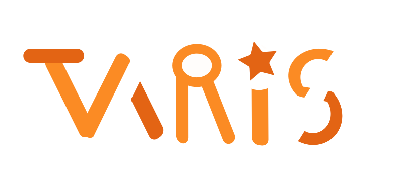3D modelēšana (Tinkercad)
Mūsu uzdevums bija izgatavot uzņēmuma logo puzles formā. Mūsu komandai bija jāizstrādā, jāizdrukā un jāsaliek puzle, kas nebija viegls process. Lai izveidotu dizainu, mums bija nepieciešama programma Tinkercad, kas ļāva strādāt 3D formātā un izveidot savu modeli, ko vēlāk izdrukājām.
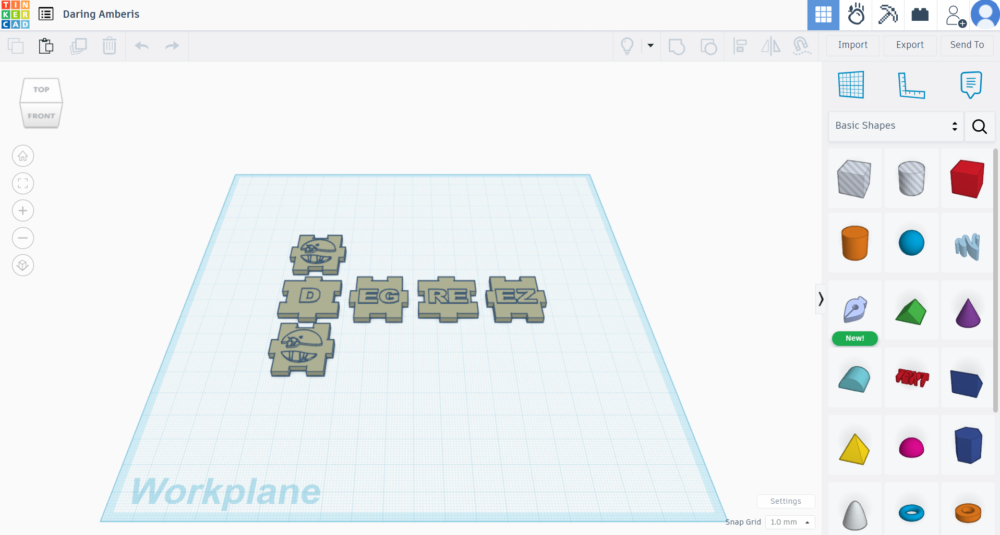 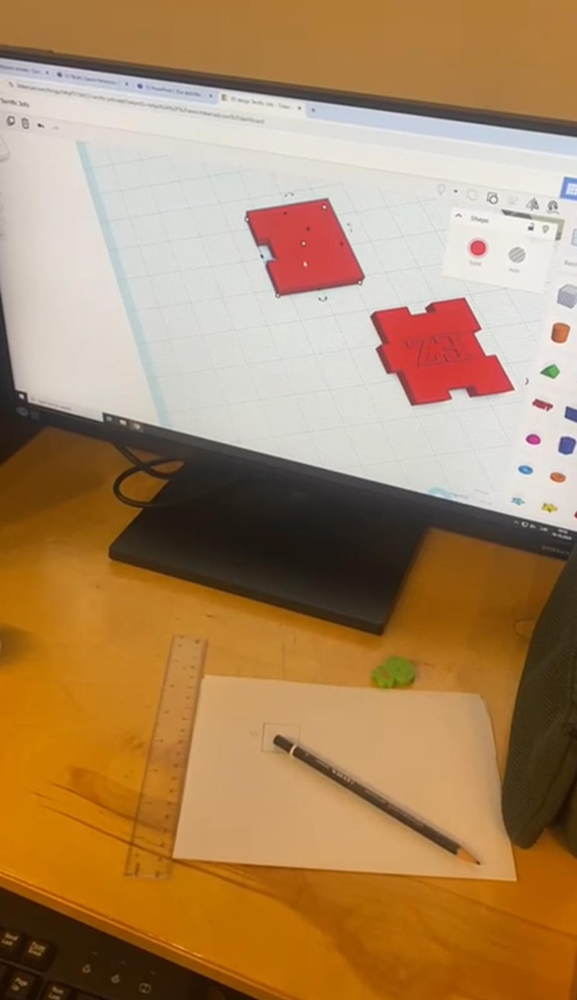 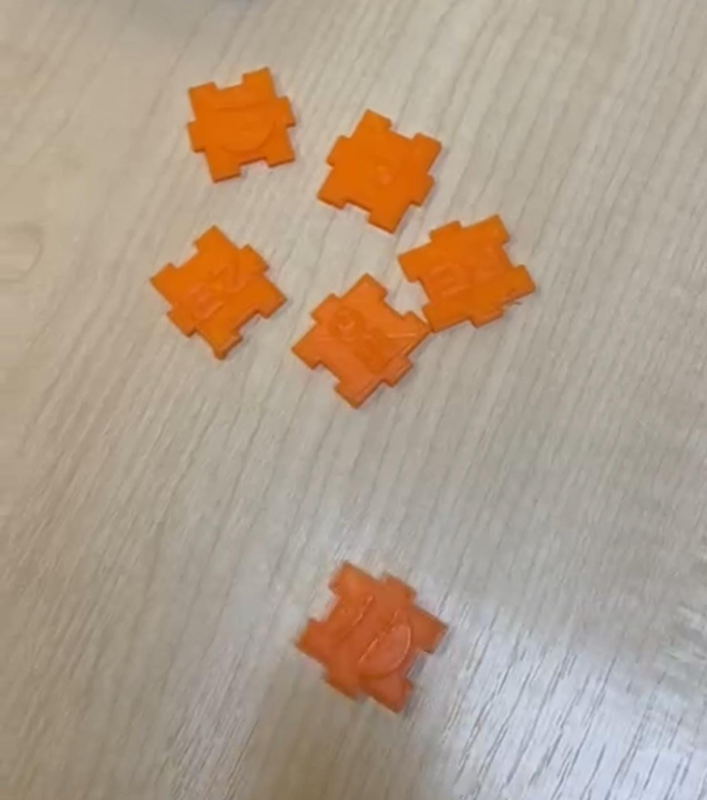Video montāža (Adobe Premiere)
Paralēli tam, kā veidojām savu modeli, bija nepieciešams izveidot video klipu par mūsu darbu. Šajā uzdevumā man palīdzēja maksas programma Adobe Premiere Pro, ar kuras palīdzību varēju savākt video materiālu un izveidot klipu.
Tekstapstrāde (Word)
Protams, datorikas kursu nevar pabeigt bez slavenākās tekstapstrādes programmas - Microsoft Word, kas izstrādāta tālajā 1983. gadā. Dokumentu apstrāde un teksta rediģēšana nav iespējama bez šīs programmas, un tieši to mēs arī darījām.
 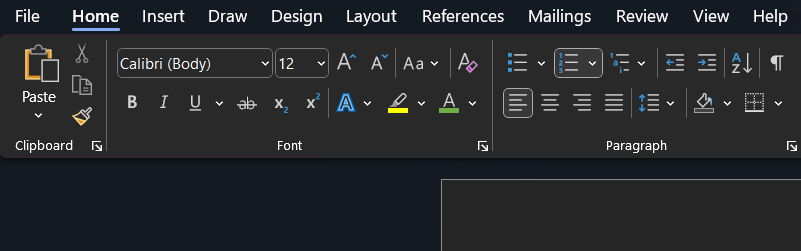
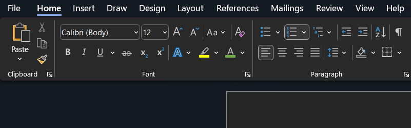
Izklājlapas (Excel)
Datu apstrāde, grafiku veidošana, aprēķinu veikšana, aprēķinu formulas - tas viss tieši attiecas uz Microsoft Excel. Mūsu kursā iemācījāmies efektīvi un produktīvi strādāt šajā programmā, veidojot grafikus, rakstot formulas, izmantojot kārtošanu u.c.
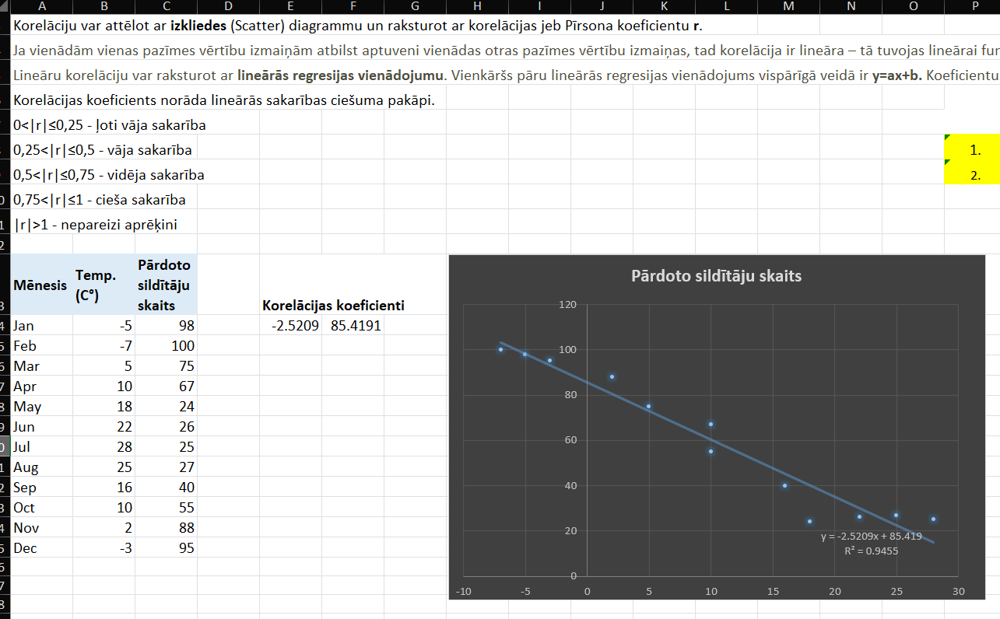 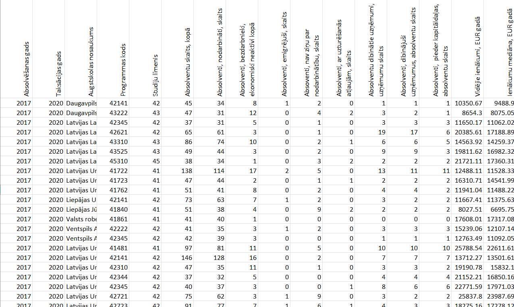